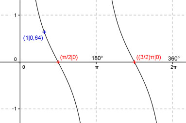

Aufgabe 133 Ergänzen Sie die Wertetabelle für x zwischen 0 und 2π. y = cot x x 1 π/2 oder 3π/2 y 0,64 0 Funktionswert an einer Stelle x ermitteln: x = 1 f(1) = cot 1 = cot 57,3° = 0,64 gerundet.  Berechnung der x-Werte für y = f(x) = 0: (entsprechen den Nullstellen) f(x) = 0 eingesetzt, existiert einmal zwischen 0 und π bzw. 0° und 180° und zwischen π und 2π bzw. 180° und 360° (siehe Graph). cot x = 0 --> x = arc cot 0 = π/2 oder α = 90°. --> Mit cot π/2 = cot (2π - π/2) folgt x1 = π/2 oder x2 = (3/2)π und α1 = 90° oder α2 = 270°.